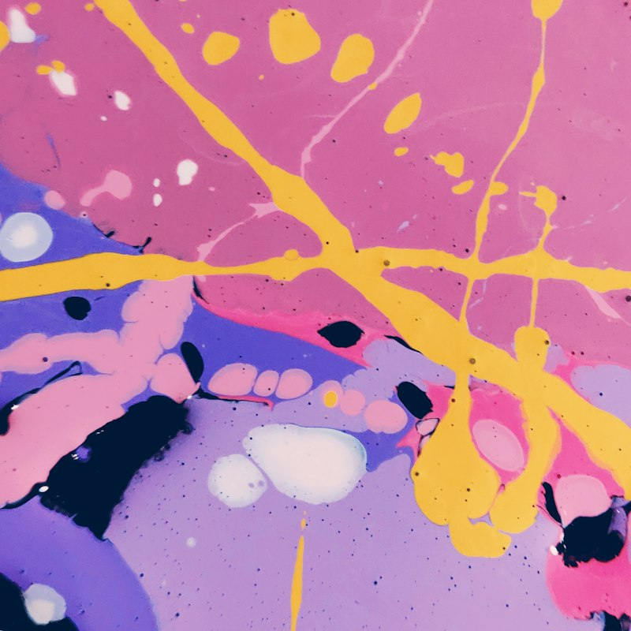

With and without grayscale applied
filter: grayscale(90%)

invert
With and without invert applied
filter: invert(90%)
opacity
With and without opacity applied
filter: opacity(30%)
saturate
With and without saturate applied
filter: saturate(200%)
sepia
With and without sepia applied
filter: sepia(70%)
hue-rotate
This function shifts the hue of all the element's colors, changing
the part of the color wheel it references. If no arguments are
passed, it does nothing.
With and without hue-rotate applied
filter: hue-rotate(120deg)
drop-shadow
With and without drop-shadow applied
filter: drop-shadow(5px 5px 10px orange);
drop-shadow can also detect edges on images and
apply exact shadows to detected shapes.
url
The url filter allows to apply an SVG filter from a
linked SVG element or file. More can be found
here
With and without url applied
filter: url(#pink-filter), where the
pink-filter is defined in HTML.
Backdrop filter
backdrop-filter works the same as
filter property and accepts the same values, but it is
applied to what is "behind" the element.
CHECK THIS OUT
I have backdrop-filter: brightness(200%), so area
behind me will be different :)